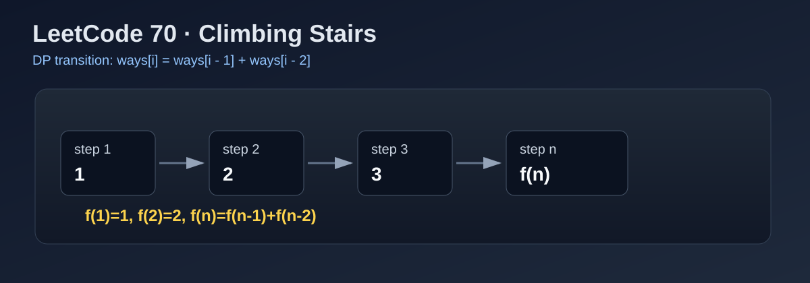

LeetCode 70: Climbing Stairs (DP / Fibonacci Transition)
LeetCode 70Dynamic ProgrammingFibonacciInterviewToday we solve LeetCode 70 - Climbing Stairs.
Source: https://leetcode.com/problems/climbing-stairs/

English
Problem Summary
You are climbing n stairs. Each move can be either 1 step or 2 steps. Return how many distinct ways you can reach exactly the top.
Key Insight
To arrive at stair i, your last move must come from i-1 (take 1 step) or i-2 (take 2 steps). Therefore:
ways[i] = ways[i - 1] + ways[i - 2]
This is exactly Fibonacci-style recurrence with different base values.
Brute Force and Why Insufficient
A brute-force DFS tries both choices (1-step and 2-step) from every state. This creates a binary recursion tree with massive repeated subproblems, so time complexity is about O(2^n). It quickly becomes too slow when n grows.
Optimal Algorithm (Step-by-Step)
1) Handle small values: if n <= 2, answer is n.
2) Let prev2 = 1 (ways for stair 1) and prev1 = 2 (ways for stair 2).
3) For each stair i from 3 to n:
a) cur = prev1 + prev2.
b) Shift window: prev2 = prev1, prev1 = cur.
4) Return prev1.
This keeps only the last two DP states, so space is constant.
Complexity Analysis
Time: O(n) (single loop).
Space: O(1) extra.
Common Pitfalls
- Wrong base cases (especially n=1 and n=2).
- Using recursion without memoization (TLE risk).
- Off-by-one in loop bounds.
- Mixing meaning of prev1/prev2 while shifting.
Reference Implementations (Java / Go / C++ / Python / JavaScript)
class Solution {
public int climbStairs(int n) {
if (n <= 2) return n;
int prev2 = 1;
int prev1 = 2;
for (int i = 3; i <= n; i++) {
int cur = prev1 + prev2;
prev2 = prev1;
prev1 = cur;
}
return prev1;
}
}func climbStairs(n int) int {
if n <= 2 {
return n
}
prev2, prev1 := 1, 2
for i := 3; i <= n; i++ {
cur := prev1 + prev2
prev2 = prev1
prev1 = cur
}
return prev1
}class Solution {
public:
int climbStairs(int n) {
if (n <= 2) return n;
int prev2 = 1, prev1 = 2;
for (int i = 3; i <= n; ++i) {
int cur = prev1 + prev2;
prev2 = prev1;
prev1 = cur;
}
return prev1;
}
};class Solution:
def climbStairs(self, n: int) -> int:
if n <= 2:
return n
prev2, prev1 = 1, 2
for _ in range(3, n + 1):
cur = prev1 + prev2
prev2 = prev1
prev1 = cur
return prev1var climbStairs = function(n) {
if (n <= 2) return n;
let prev2 = 1, prev1 = 2;
for (let i = 3; i <= n; i++) {
const cur = prev1 + prev2;
prev2 = prev1;
prev1 = cur;
}
return prev1;
};中文
题目概述
你正在爬楼梯，共有 n 阶。每次可以爬 1 阶或 2 阶，问恰好到达第 n 阶有多少种不同方法。
核心思路
到达第 i 阶的最后一步只可能来自第 i-1 阶（走 1 阶）或第 i-2 阶（走 2 阶），因此状态转移是：
ways[i] = ways[i - 1] + ways[i - 2]
这就是一个标准斐波那契型 DP。
暴力解法与不足
暴力递归会在每一层分裂成两条分支（+1 或 +2），产生大量重复子问题，时间复杂度约 O(2^n)。当 n 增大时很容易超时。
最优算法（步骤）
1）若 n <= 2，直接返回 n。
2）用 prev2=1 表示到第 1 阶的方法数，prev1=2 表示到第 2 阶的方法数。
3）从第 3 阶遍历到第 n 阶：
a）cur = prev1 + prev2；
b）窗口右移：prev2 = prev1，prev1 = cur。
4）返回 prev1。
只保留最近两个状态即可，空间复杂度为常数。
复杂度分析
时间复杂度：O(n)。
空间复杂度：O(1) 额外空间。
常见陷阱
- 基础情况写错（尤其 n=1/n=2）。
- 直接递归不加记忆化导致超时。
- 循环上下界写错造成 off-by-one。
- 状态滚动时变量含义混淆。
多语言参考实现（Java / Go / C++ / Python / JavaScript）
class Solution {
public int climbStairs(int n) {
if (n <= 2) return n;
int prev2 = 1;
int prev1 = 2;
for (int i = 3; i <= n; i++) {
int cur = prev1 + prev2;
prev2 = prev1;
prev1 = cur;
}
return prev1;
}
}func climbStairs(n int) int {
if n <= 2 {
return n
}
prev2, prev1 := 1, 2
for i := 3; i <= n; i++ {
cur := prev1 + prev2
prev2 = prev1
prev1 = cur
}
return prev1
}class Solution {
public:
int climbStairs(int n) {
if (n <= 2) return n;
int prev2 = 1, prev1 = 2;
for (int i = 3; i <= n; ++i) {
int cur = prev1 + prev2;
prev2 = prev1;
prev1 = cur;
}
return prev1;
}
};class Solution:
def climbStairs(self, n: int) -> int:
if n <= 2:
return n
prev2, prev1 = 1, 2
for _ in range(3, n + 1):
cur = prev1 + prev2
prev2 = prev1
prev1 = cur
return prev1var climbStairs = function(n) {
if (n <= 2) return n;
let prev2 = 1, prev1 = 2;
for (let i = 3; i <= n; i++) {
const cur = prev1 + prev2;
prev2 = prev1;
prev1 = cur;
}
return prev1;
};
Comments